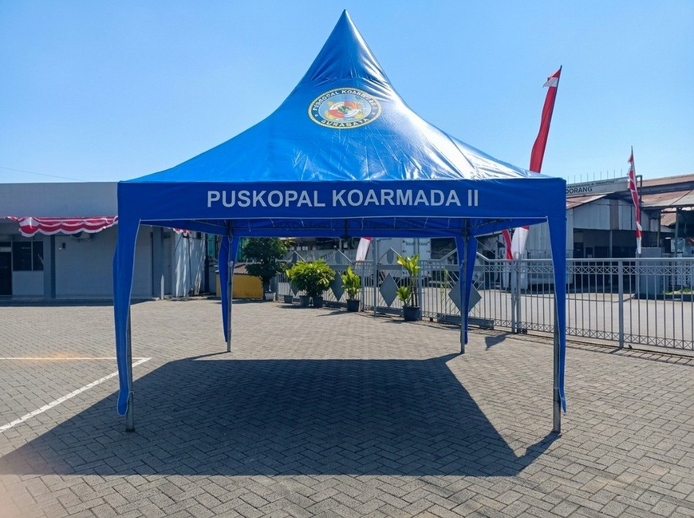
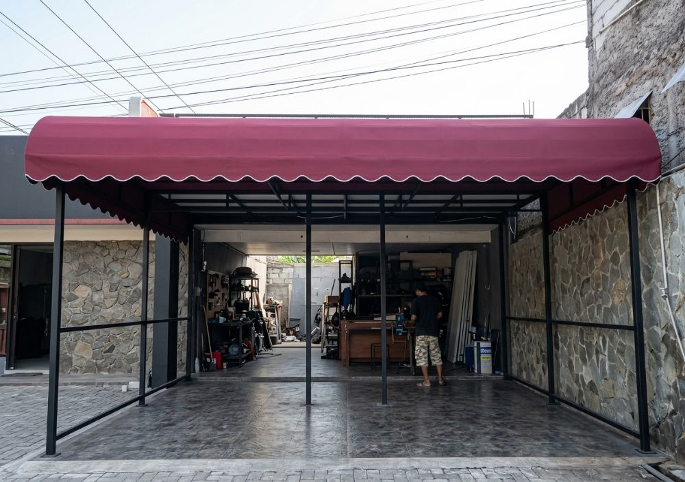

Pabrik & Produsen Tenda Murah Surabaya Terdekat Langsung Tangan Pertama
Sedang mencari pabrik atau tempat pembuatan tenda murah di Surabaya? Wiguna Tenda adalah produsen spesialis tenda kerucut pameran, tenda bazar promosi UMKM, tenda limas, lipat, dan terpal custom bergaransi resmi. Workshop kami di Driyorejo hanya berjarak 10–20 menit dari perbatasan Surabaya Barat (Lakarsantri, Karang Pilang, Wiyung) dengan layanan antar cepat dan pasang di tempat.

Kenapa Warga & Bisnis di Surabaya Memilih Wiguna Tenda?
Pabrik tenda terdekat dengan harga murah bersahabat, kualitas presisi, dan jangkauan antar cepat.
Lokasi Terdekat dari Surabaya Barat
Workshop kami di Driyorejo menempel langsung dengan wilayah perbatasan Surabaya Barat (Lakarsantri, Karang Pilang, Wiyung). Waktu tempuh pengiriman hanya 10–20 menit sehingga biaya ongkir sangat murah dan cepat tiba di lokasi acara Anda.
Harga Pabrik Tangan Pertama
Membeli tenda di toko ritel Surabaya seringkali sudah melalui perantara atau makelar. Di Wiguna Tenda, Anda membeli langsung dari pabrik produsen pembuatnya, sehingga mendapatkan harga tenda murah terbaik dengan kualitas bahan terjamin.
Bisa Custom Desain & Branding Sablon
Butuh tenda promosi dengan logo perusahaan, warna brand kantor, atau tema bazar kuliner di Surabaya? Kami melayani sablon logo full color beresolusi tinggi yang tahan sinar UV matahari dan tidak mudah luntur.
Rangka Pipa Besi Tebal & Presisi
Tenda kami menggunakan rangka pipa besi tebal berkualitas (pipa hitam/galvanis anti-karat) dengan sambungan sok presisi. Sangat kokoh dan stabil menahan hembusan angin kencang di area outdoor Surabaya.
Siap Kirim & Pasang di Tempat
Bagi Anda yang tidak memiliki armada angkut atau tenaga pasang, tim teknisi Wiguna Tenda siap mengantarkan pesanan tenda dan merakitnya langsung di lokasi Anda di Surabaya.
Garansi Sambungan Las & Terpal
Setiap produk tenda dan terpal custom dari Wiguna Tenda dilengkapi garansi sambungan rangka las dan pres terpal. Kami menjamin kepuasan pelanggan jangka panjang.
Katalog Produk Tenda Murah Favorit Pelanggan Surabaya
Pilihan lengkap tenda promosi, tenda bazar, kerucut, limas, lipat, dan terpal custom harga langsung pabrik.

Tenda Kerucut Surabaya (Sarnafil)
Tenda kerucut elegan sangat diminati untuk posko event, pameran outdoor, booth dealer mobil/motor, dan bazar di mall & lapangan terbuka Surabaya. Desain atap lancip aerodinamis tahan angin kencang.
- Ukuran Populer: 2x2m, 2.5x2.5m, 3x3m, 4x4m, 5x5m
- Bahan Rangka: Pipa besi hollow bulat / pipa kotak tebal
- Bahan Atap: Terpal Uno Jerman / Tarpaulin Korea Waterproof
- Custom Branding: Sablon logo brand & warna kain custom

Tenda Bazar & Promosi Surabaya
Solusi tenda dagang dan promosi hemat biaya untuk lapak UMKM kuliner Surabaya, pasar malam, car free day (CFD), festival makanan, dan aktivasi marketing produk perusahaan di Surabaya.
- Ukuran Populer: 2x2m, 2x3m, 3x3m, 3x4.5m
- Keunggulan: Rangka kokoh, mudah dibongkar-pasang
- Pilihan Dinding: Polos, mika transparan, atau sablon full
- Harga: Sangat terjangkau langsung tangan pertama pabrik

Tenda Limas (Piramida) Surabaya
Tenda dengan atap piramida 4 sisi yang memberikan ruang dalam luas tanpa tiang tengah yang mengganggu. Sangat diminati untuk posko sekuriti perumahan Surabaya, posko proyek kontraktor, dan stand pameran.
- Ukuran Populer: 3x3m, 3x4m, 4x4m, 4x6m
- Bahan Rangka: Besi pipa hollow presisi anti goyang
- Ketahanan: Tahan panas terik dan guyuran hujan lebat
- Branding: Siap cetak nama proyek / logo instansi

Tenda Lipat Portable Surabaya
Tenda lipat model folding tent otomatis yang bisa didirikan dan dilipat hanya dalam 5 menit oleh 1–2 orang. Sangat cocok bagi pedagang keliling, stan pameran mall, dan bazar kuliner Surabaya.
- Ukuran: 2x2m, 2x3m, 3x3m, 3x4.5m
- Rangka: Besi hollow powder coating anti-karat
- Atap: Kain Oxford 600D / 800D waterproof tebal
- Kelebihan: Ringan, ringkas, mudah dimasukkan bagasi mobil

Tenda Pesta & Pernikahan Surabaya
Fabrikasi tenda plafon serut dekoratif untuk hajatan warga Surabaya, acara pernikahan (wedding), khitanan, pengajian, dan pertemuan akbar warga kampung dengan konstruksi pipa besi bentang lebar kokoh.
- Ukuran Bentang: Lebar 4m, 6m, 8m hingga 10m ke atas
- Dekorasi: Plafon serut warna custom elegan
- Kapasitas: Produksi partai besar untuk persewaan tenda
- Kekuatan: Pipa gas tebal standar safety beban tenda

Kanopi Awning Cafe & Terpal Custom
Pembuatan kanopi kain Sunbrella untuk ruko, cafe, restoran, dan carport rumah di Surabaya, serta pembuatan aneka terpal custom penutup bak truk muatan pelabuhan Tanjung Perak, kolam terpal, dan penutup alat berat.
- Bahan: Sunbrella impor, Dickson, Tarpaulin tebal Orchid
- Karakteristik: Elegan, estetis, penahan panas terik dan hujan
- Pemasangan: Tim teknisi profesional langsung ke lokasi Surabaya
- Garansi: Garansi rangka dan sambungan pres terpal
Melayani Pengiriman Cepat & Pasang di Seluruh Surabaya
Lokasi workshop kami di perbatasan Driyorejo memudahkan mobilitas cepat ke berbagai wilayah di Kota Surabaya.
Surabaya Barat (10-15 Menit)
Akses langsung via jalur Driyorejo & Karang Pilang. Melayani:
- Kecamatan Lakarsantri & Jeruk
- Kecamatan Wiyung & Babatan
- Kecamatan Sambikerep & Citraland
- Kecamatan Tandes & Manukan
- Kecamatan Sukomanunggal & Pakal
Surabaya Selatan (15-25 Menit)
Akses via Karang Pilang & Mastrip Surabaya. Melayani:
- Kecamatan Karang Pilang & Kebraon
- Kecamatan Jambangan & Karah
- Kecamatan Wonokromo & Darmo
- Kecamatan Gayungan & Ketintang
- Kecamatan Sawahan & Dukuh Pakis
Surabaya Pusat, Timur & Utara
Akses via tol Gunungsari & jalur protokol Surabaya. Melayani:
- Surabaya Pusat: Tegalsari, Genteng, Bubutan
- Surabaya Timur: Gubeng, Rungkut, Sukolilo
- Surabaya Utara: Pabean Cantikan, Semampir, Perak
- Kawasan Industri Rungkut (SIER) & Margomulyo
- Sekitarnya: Waru, Sidoarjo, dan Gresik Kota
Pertanyaan Seputar Pesan Tenda Murah Surabaya
Ya, kami melayani pengiriman cepat dan pemasangan langsung di tempat untuk seluruh wilayah Kota Surabaya, meliputi Surabaya Barat (Lakarsantri, Wiyung, Sambikerep, Tandes), Surabaya Selatan (Karang Pilang, Wonokromo, Jambangan), Surabaya Pusat, Timur, dan Utara. Workshop kami berlokasi di perbatasan Driyorejo hanya berjarak 10-20 menit dari Surabaya Barat.
Tentu saja. Anda mendapatkan harga tangan pertama langsung dari pabrik produsen tanpa perantara atau markup toko distributor. Kami memberikan jaminan harga tenda murah terbaik dengan material rangka pipa besi tebal dan terpal berkualitas tinggi.
Bisa. Kami melayani pembuatan tenda promosi, tenda kerucut, dan tenda limas lengkap dengan sablon logo tajam beresolusi tinggi, tahan cuaca panas dan hujan, sangat cocok untuk branding perusahaan, dealer, perumahan, instansi pemerintah, dan bazar UMKM kuliner di Surabaya.
Caranya sangat mudah. Anda cukup menghubungi tim sales & teknis kami via WhatsApp di 0895-3512-87502 (Sherly) atau 0895-1053-2984 (Rendra). Kami siap memberikan konsultasi desain gratis, rekomendasi ukuran, dan penawaran harga resmi.
Untuk ukuran standar (seperti tenda kerucut 2x2m, 3x3m atau tenda bazar) umumnya memakan waktu 2–4 hari kerja tergantung antrean produksi dan kebutuhan sablon logo. Untuk pesanan dalam jumlah besar (partai pameran / pengadaan kantor), kami akan menjadwalkan timeline produksi yang disepakati bersama secara tepat waktu.
Butuh Tenda Murah Berkualitas untuk Acara Anda di Surabaya?
Konsultasikan kebutuhan ukuran tenda, desain sablon logo, dan jadwal pengiriman Anda langsung kepada tim pabrik kami. Dapatkan penawaran harga terbaik sekarang!